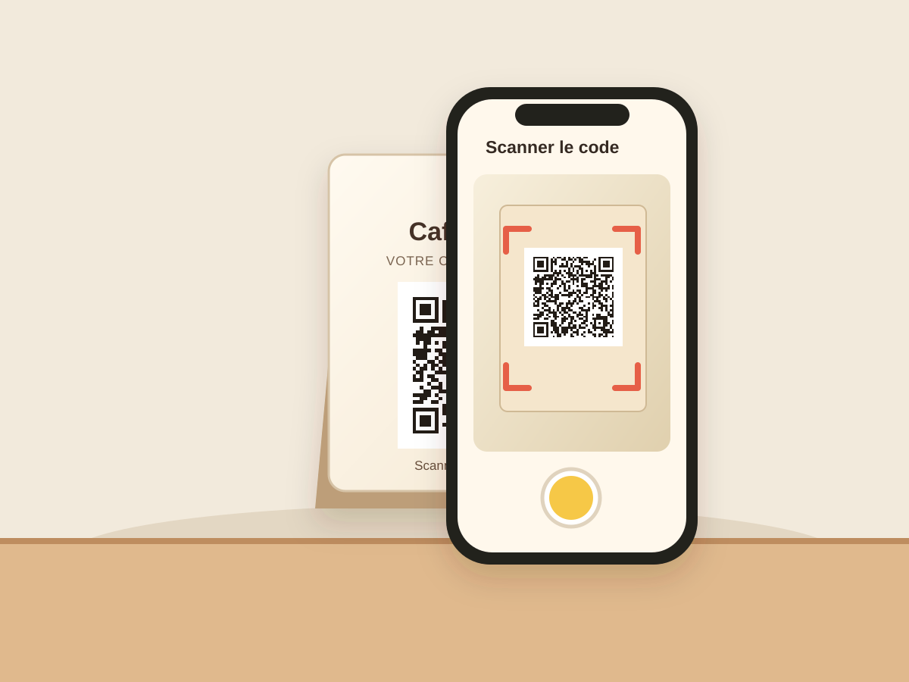
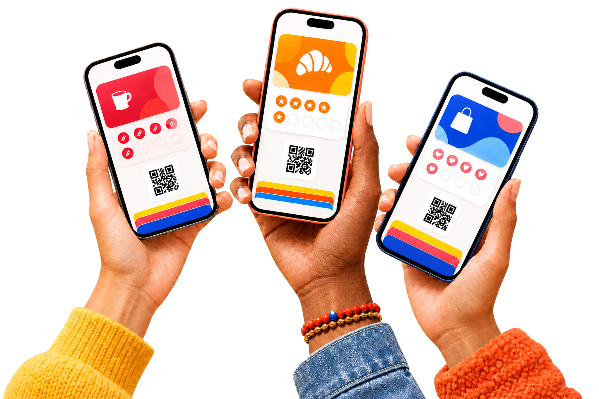
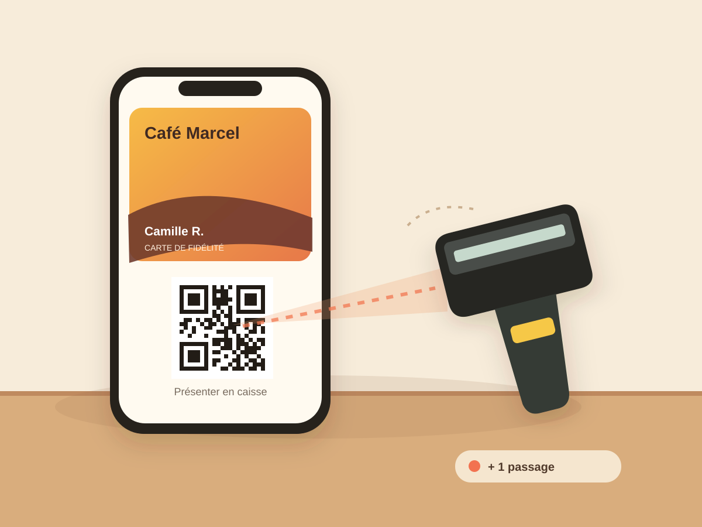
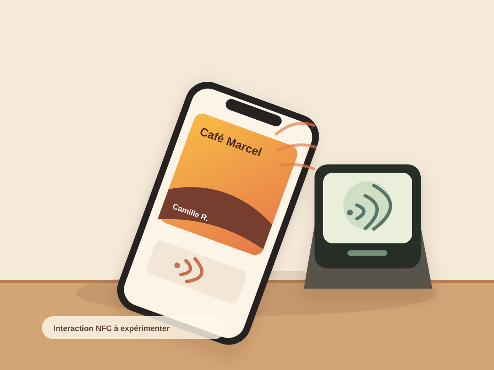
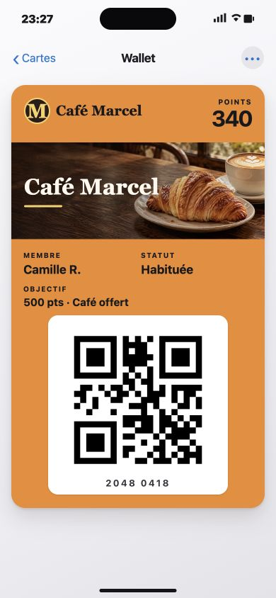
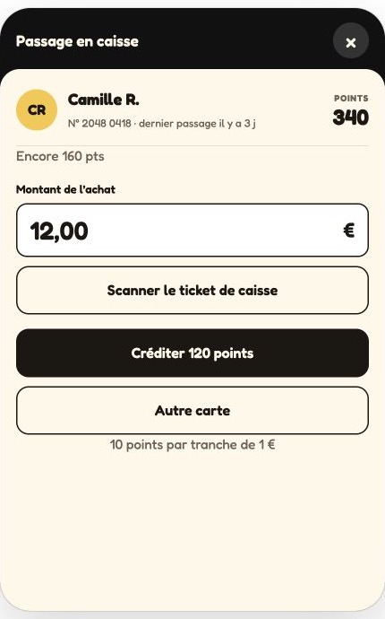

Le client rejoint le programme.
Il scanne le QR code du commerce. Le parcours cible lui propose ensuite de conserver sa carte dans le Wallet de son téléphone.
On revient là où l’on se sent reconnu. FIDELITIZ est né ici pour aider les commerces de quartier à faire vivre ce lien, avec une fidélité numérique simple, rapide et accessible.

Le client garde sa carte. Vous reconnaissez chaque visite. La relation continue, simplement.

Il scanne le QR code du commerce. Le parcours cible lui propose ensuite de conserver sa carte dans le Wallet de son téléphone.

À chaque visite, l’équipe lit le QR code de la carte affichée sur le téléphone du client. Les points ou passages sont ajoutés au bon compte.

Nous étudions aussi le passage par NFC. Cette option nécessite un lecteur compatible et sera validée avec les bêta-testeurs.
Côté client
Camille retrouve ses points et le QR à présenter en caisse.

Côté professionnel
La carte reconnue, l’équipe saisit l’achat et voit les points à créditer.

Nous sommes une jeune équipe bordelaise. Les commerces indépendants méritent les outils utiles des grandes plateformes — carte, points, passages, retours clients — sans leur complexité.
La bêta est gratuite. Vos retours nous aident à retirer des clics, accélérer les gestes en caisse et bâtir un prix plus juste. Le produit avance avec celles et ceux qui l’utilisent.
Parlons de votre commerceVous tenez un commerce ici ? Racontez-nous ce qui vous ferait gagner du temps. On vous répond en personne pour préparer un test utile, sans frais.
Vous préférez nous écrire ? bonjour@fidelitiz.fr